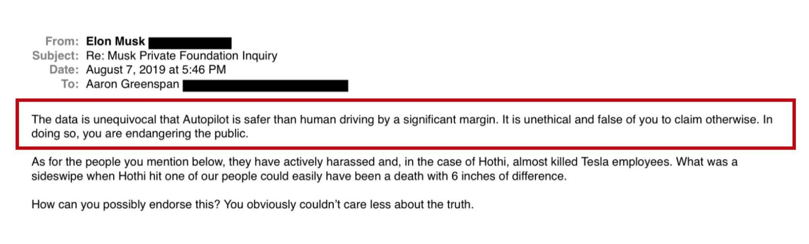
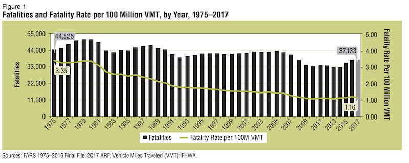
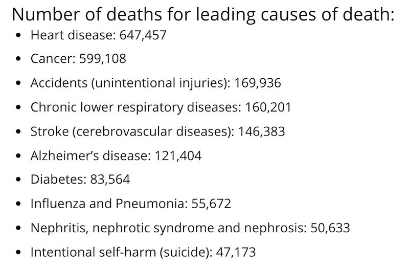
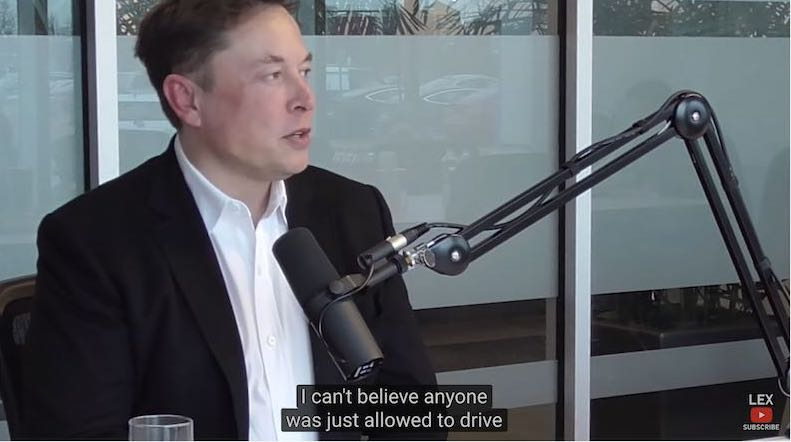

我曾经对 Tesla 的 Autopilot 做过一些技术上，责任上的分析，可是我发现人们对于自动驾驶车的责任和风险问题，仍然缺乏一个精确的，使人信服的说法。最近思考很多机器视觉方面的问题，最终产生了这篇文章中的想法。在本文里，我试图使用逻辑和概率分析来分析自动驾驶车的责任和风险问题。虽然文中的数学不是细节到位，但是你可以从中得到分析这类问题的科学思路。
自动驾驶领域最著名，最不负责任的人，当属 Tesla 的 Elon Musk 先生了。他不但总是对 Tesla 的 Autopilot 进行夸大的宣传，吹嘘“全自动驾驶很快就要实现了”，“Autopilot 的识别能力成指数增长”，让人误解 Autopilot 的能力，死了人之后还要在网上发话扭曲人们的逻辑。Tesla 公司总是抓住“车主没有及时接管”等各种借口，逃避对事故的责任。
Elon Musk 总是说：“自动驾驶的事故率还是远远低于人类驾驶员！” 很多书呆子极客会听信他的“事故率”，为他所谓的“高科技”欢呼。甚至有人跟风说 Autopilot 比人类驾驶员安全 4 倍，甚至 6 倍！这些人都不明白，这些大范围的统计数字对于事故责任分析，对于 Autopilot 的风险评估都是没用的，而且他们的统计方法，解释统计数字的方式都是根本错误的。

Elon Musk 的说法就相当于在说：“我活了这么久，为这么多客户服务，没杀过其中任何一个人，我杀人的概率非常低，低于全国的谋杀犯罪率，所以我现在杀了你没什么大不了的。” 先不说 Autopilot 的事故率是否真的那么低。即使它事故率是很低，难道弄死了人就可以不负责，甚至不受谴责吗？
到底 Tesla 有没有责任，我们可以使用逻辑学的因果关系“反事实分析”（counterfactual analysis）。假设驾驶员没有使用 Autopilot 而是自己开车，那么这次事故还会不会发生？如果不会发生，那么我们得到因果关系：Autopilot 导致了事故。不管其他人用 Autopilot 有没有出事故，事故占多大比例，面对这里的因果关系都是无关紧要的。
因果关系等于责任。
如果是 Autopilot 导致了事故，即使总共只发生了一次事故，都该它的设计者 Tesla 公司负责。很多人都是混淆了“责任”和“事故率”，所以才会继续支持 Elon Musk 和 Tesla 的胡言乱语。有些人以为“自动驾驶可能会降低全国的车祸率”，从而认为 Autopilot 引起少数几次车祸问题不大，而不明白“事故率”跟“责任”和“事故再次发生的风险”，完全是两码事。
另外，如果你看透了这些吹嘘得神乎其神的“机器的视觉能力”有多差多假，就会知道“自动驾驶会降低车祸率”这个说法根本就不可能实现。
为什么我强调“责任”呢？因为人如果自己开车，不小心出了车祸伤到自己，他自己是可以接受的，因为是自己的责任。然而要是 Autopilot 判断错误引起车祸，撞伤了自己，对于车主来说这就是不可接受的，必然要追究 Tesla 公司的责任。
任何人都明白这个道理吧？这就跟自己开车不小心受了伤，和出租车司机不小心导致你受伤的差别一样。你会告那个出租车司机，你却不会上法庭告自己。简单吧？
每一次 Autopilot 相关的事故，Tesla 公司都会在事后散布新闻说是驾驶者开车不认真，手没有在方向盘上准备随时接管，所以不是 Autopilot 的责任。驾驶者是否认真在开车，人死了无所对证，但这些全都成为了 Tesla 公司推脱责任的借口。
如果发现 Autopilot 判断失误，你真来得及接管吗，你能在那么短的时间内做出正确的反应吗？就算你双手都在方向盘上，车到了离障碍物多近的地方不减速，你才会意识到它出错了，决定接管呢？恐怕到了自己接管的时候就已经晚了。所以要求车主随时接管，根本就不是一个合理的要求，不应该作为 Tesla 免责的理由。
如果拿事故率说事，航空业的事故率远远低于汽车业了吧？可是为什么全世界好多年才发生一次空难，却每一次都带来那么多的舆论关注，进行那么严格的调查呢？就是因为我之前分析的，责任和事故率完全是两回事。
任何人或者交通工具本身的问题导致了事故，引起死伤，都是不会被放过的，不管他的总体事故率如何低，都一样要被惩罚。
另外责任的大小，舆论的大小，也与同一事故的死伤人数有关。如果是一个人开车不小心撞了，死了两个人，人们不会特别关注，因为“杀伤力”太小，只有 1:2。全国一年发生很多起这样的事故，就算总共死了几万人，都不会引起人们关注，因为平均每次事故还是只死了一两个人。人们知道那都是个别情况，小概率事件，只要自己小心开车，就不大可能会发生在自己身上。而且人们知道开车出点小碰撞是根本死不了人的，也就是说出车祸之后的存活率还挺高的。
可是如果一个飞行员操作失误，或者飞机故障导致 200 人丧生，就严重很多。好多年才死几百人，比起车祸每年死几万人，似乎小的可以忽略不计，可是为什么人们这么关心空难，而很少关心车祸死亡人数呢？首先，空难发生之后的存活率几乎为零，这跟普通车祸是没法比的，很可怕。另外，同一事故死亡人数很多，杀伤力为 1:200。
所以人们会开始怀疑那家航空公司的飞行员是不是培训不够严格，或者是不是有被迫加班，疲劳驾驶的情况。人们会怀疑那个型号的飞机是不是全都有设计或者质量问题。所以就那么一次空难，会导致“近期再次发生空难”的概率（所谓后验概率）大幅度上升。
这就是人们看到空难新闻如此关心的原因。人们关心的不是“总体事故率”，而是“自己遇上事故的概率”。我把这个概率叫做“个人风险”。
为什么波音 737 MAX 的空难引起这么大的风波呢？为什么以前的波音飞机空难都没有如此大的影响呢？甚至 9.11 事件发生的时候，两架波音飞机撞了大楼，引起几千人丧命，都没有对波音公司造成如此严重的打击。因为由于飞机的设计错误而导致的空难，和由于飞行员或者其它原因（比如劫机）而导致的空难，对“近期再次发生空难”的后验概率，对于“个人风险”的影响程度，是不一样的。
这就是为什么每年几万起其它车祸没什么人关心，而 Autopilot 引起一两次车祸就这么多新闻舆论。因为要是车祸是由于 Autopilot 引起的，那么同样的车祸就可能发生在所有使用 Autopilot 的 Tesla 车主身上，“Autopilot 再次发生车祸”的后验概率就会大大提高。Autopilot 导致自己伤亡的风险就很高了。
这里的核心问题就在于，到底是人开车还是 Autopilot 开车。人和软件不仅在技术能力上有很大差别，对于概率风险分析，人和软件的效果也是很不一样的。简言之，人是“独立随机变量”，而 Autopilot 不是独立变量。
每个人都是不一样的，是独立的个体。有的人开车很稳，有的人开车一般，而少数人很鲁莽。这些人之间没有必然的联系，是“独立随机变量”。什么叫“独立”呢？意思是某个人自己开车不小心出车祸，其他人并不一定会出同样的车祸，因为每个人的开车方式都不一样。在概率论里面，这些人是否出现车祸完全是独立的事件。
而 Autopilot 是一个软件系统，所有安装 Autopilot 的车都有一模一样的行为方式，所以使用 Autopilot 的许多 Tesla 车不是独立变量，而是“相关变量”，它们通过 Autopilot 系统的设计关联在了一起。如果 Autopilot 因为判断错误导致一次车祸，那么所有使用 Autopilot 的车都很可能发生同样的车祸。
相应的随机变量是否“独立”，导致了人类驾驶员与 Autopilot 出现一次事故的风险分析完全不一样。
如果你学过概率论，那么 Autopilot 车主出事的“后验概率”（posterior probability）会因为“Autopilot 引起一次车祸”的发生而大幅度提高，而如果是人开的汽车，那么它的后验概率基本不会因为另外一辆同型号车出事而提高。写成数学公式就是：
P(其它 Autopilot 出车祸 | Autopilot 引起一次车祸)
远大于
P(其它非自动车出车祸 | 一辆非自动车出车祸)
事故起因的随机性不同，后验概率也就随之不同。同理，对于之前的空难问题，你也可以使用类似的条件概率分析。再次发生空难的“后验概率”，根据某一次空难的起因，会有很大的差别。
P(近期再次发生空难 | 飞机设计错误引起一次空难)
远大于
P(近期再次发生空难 | 飞行员操作失误引起一次空难)
大于
P(近期再次发生空难 | 劫机引起一次空难)
面对“Autopilot 有一定概率会要了你的命”这一事实，不管 Autopilot 的总体事故率有多低，甚至像 Elon Musk 说的低于全国车祸率，对于 Tesla 车主来说都是毫无意义的。一是因为“责任”：车主可以允许自己要了自己的命，却不允许 Autopilot 或者其他人要了自己的命，更不允许是因为别人的愚蠢而要了自己的命。二是因为“个人风险”，不管全国的事故率是多少，自己开车的风险一般只跟自己开车的小心程度有关系，也就是说自己开车出事的概率基本是独立于全国事故率的。而使用 Autopilot，自己的风险就受到 Autopilot 设计的影响，跟 Autopilot 的平均事故率差不多了。
Autopilot 的事故率真的低吗？你可以自己研究一下。如果你算对了数学，恐怕它的事故率并不低。举一个例子，普通人只计算了事故的数目与 Autopilot 导航的总里程的比例，却忽视了那些由于驾驶员及时接管而避免了的事故的数目。另外 Tesla 属于比较贵的车，买车的人属于对自己比较负责的人，所以事故率不应该跟所有车的事故率比，而应该跟没有安装自动驾驶技术的奔驰，保时捷一类的车的事故率对比。
我们来仔细看看统计数字吧。美国 2017 年车祸总共死了 3.7 万人。看上去很多，可是美国人口有 3.2 亿，2017 年车祸死亡人数只占总人口的 0.011%。另外按里程数的死亡比例，每一亿英里行车路程，平均只死了 1.16 人。从 1975 年到 2017 年，每一亿英里死亡人数从 3.35 人降低到了 1.16 人，所以即使没有 Autopilot，开车也是越来越安全了。

来对比一下其它死因吧。美国 2017 年因心脏病死亡人数 64.7 万人，癌症死亡人数 59.9 万，呼吸道疾病死亡 16 万，中风死亡 14.6 万，意外伤害死亡 16.9 万（包括车祸），糖尿病 8.3 万，流感 5.5 万，自杀 4.7 万。其中意外伤害死亡的 16.9 万里面包括了车祸的 3.7 万，所以另外 13.2 万人死于其它的意外。连自杀都有 4.7 万人！所以你可能意识到了，车祸死亡 3.7 万人并不是一个那么可怕的数字。

你知道车祸死掉的都是什么人吗？他们是怎么开的车？只要自己小心开车，我不觉得你自己的风险会有那么高，比你得抑郁症想自杀的概率都要小。
Elon Musk 在采访中把汽车叫做“two-ton death machine”（两吨重的死亡机器），甚至说“难以置信我们居然允许人开车”，根本就是危言耸听。盲目的强调车祸死亡人数，号称可以降低事故率，就是自动驾驶领域常见的幌子。他们解决的并不是一个那么重要的问题，而且解决的方法根本就是不切实际的忽悠。

所以 Tesla 不但在技术上无法实现自动驾驶，而且人品和诚信都很成问题。我还没有见过一个汽车公司如此急于推脱责任的，一般都是积极配合调查，勇于承担责任，及时整改，这样才可能得到公众的信任。